A footpath along the mountain crests of California, Oregon and Washington, from the Mexican border near Campo to the Canadian border at Manning Park. Congress made it a National Scenic Trail in 1968; the last gap closed in 1993.
ทางเดินเท้าไต่ตามสันเขาของรัฐแคลิฟอร์เนีย โอเรกอน และวอชิงตัน จากชายแดนเม็กซิโกใกล้เมืองแคมโป ไปถึงชายแดนแคนาดาที่อุทยานแมนนิง รัฐสภาอเมริกาประกาศเป็นเส้นทางชมวิวแห่งชาติในปี 1968 และสร้างต่อจนครบเส้นในปี 1993 คนที่เดินรวดเดียวจบใช้เวลาราวห้าเดือน
Permits: the PCTA issues up to 50 a day for northbound starts at the Mexican border, 1 March to 31 May. Applications for 2027 open 15 October 2026. Canada stopped issuing PCT entry permits on 31 January 2025, so northbound hikers tag the border monument and walk back out to Harts Pass.
South to north จากใต้ขึ้นเหนือ
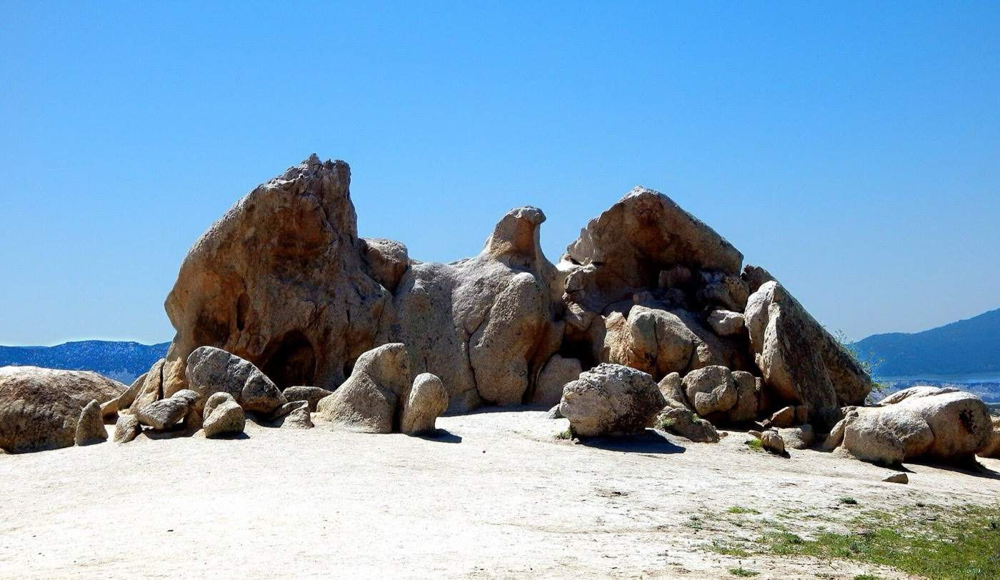
Mile ~101 · Eagle Rock near Warner Springs, a week into the desert. หินรูปนกอินทรีใกล้วอร์เนอร์สปริงส์Photo Seauton, CC BY-SA 4.0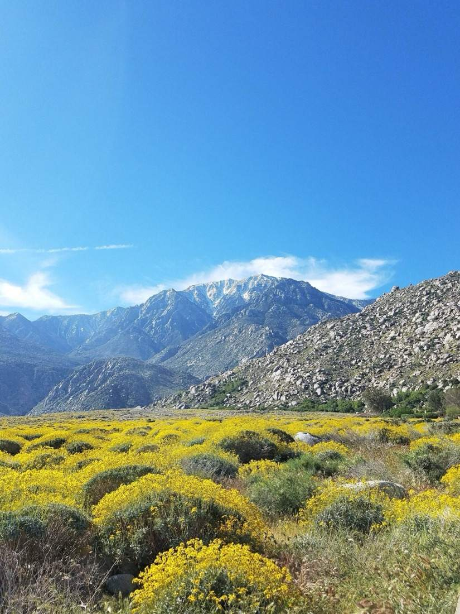
Santa Rosa and San Jacinto Mountains · spring bloom where the trail crosses the national monument. ดอกไม้ป่าฤดูใบไม้ผลิPhoto BLM California (Tracy Albrecht), public domain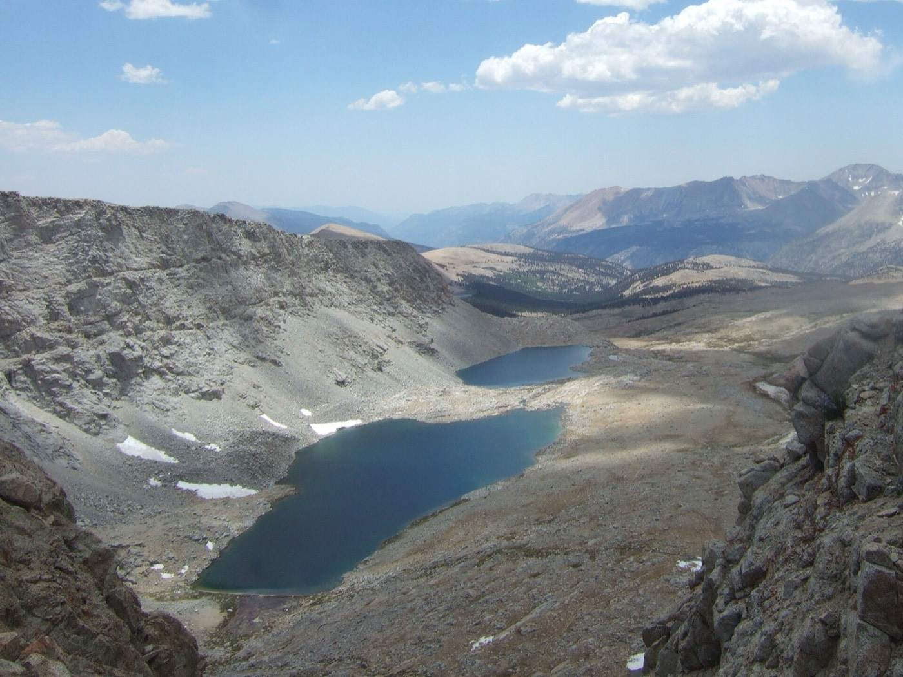
Mile ~779 · Forester Pass, 13,153 ft, the highest point on the trail. ช่องเขาฟอเรสเตอร์ จุดสูงสุดPhoto wetwebwork, CC BY-SA 2.0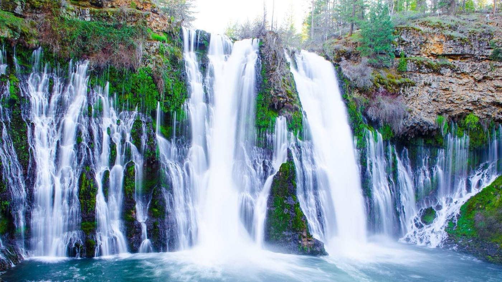
Mile ~1419 · Burney Falls, a few miles past Burney Mountain Guest Ranch. น้ำตกเบอร์นีย์Photo Saxena ashes, CC BY-SA 4.0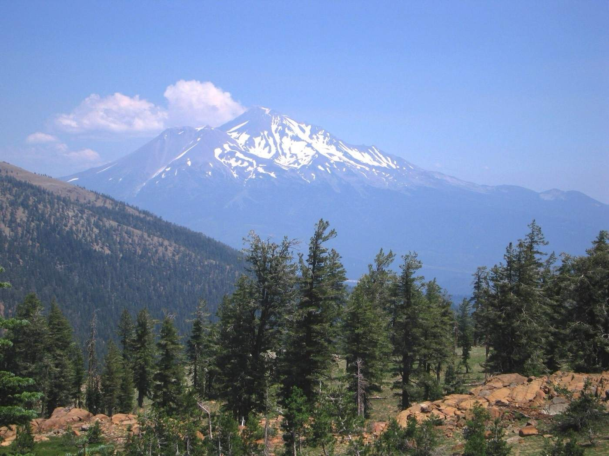
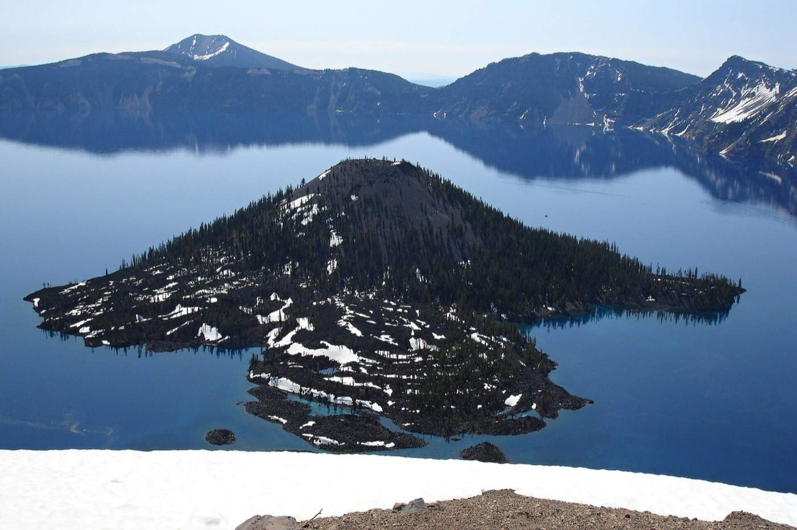
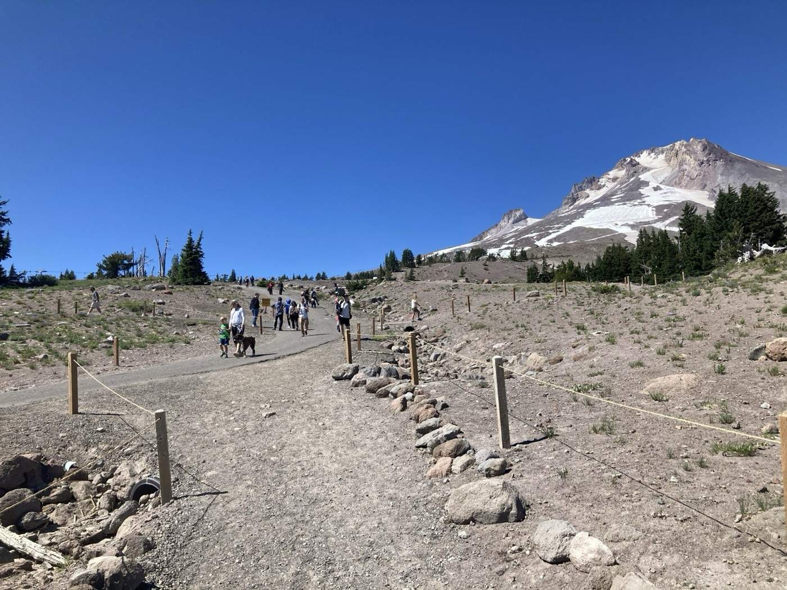
Oregon · above Timberline Lodge on Mount Hood. ภูเขาฮูดPhoto U.S. Forest Service, public domain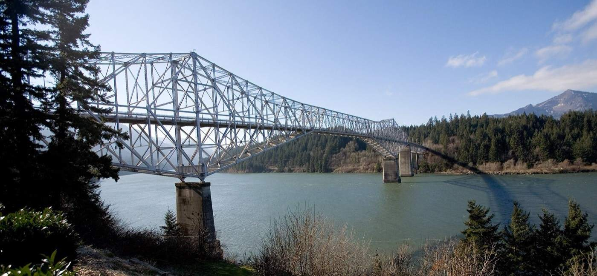
Mile ~2147 · Bridge of the Gods at Cascade Locks, into Washington. สะพานแห่งเทพ เข้ารัฐวอชิงตันPhoto Cacophony, CC BY 2.5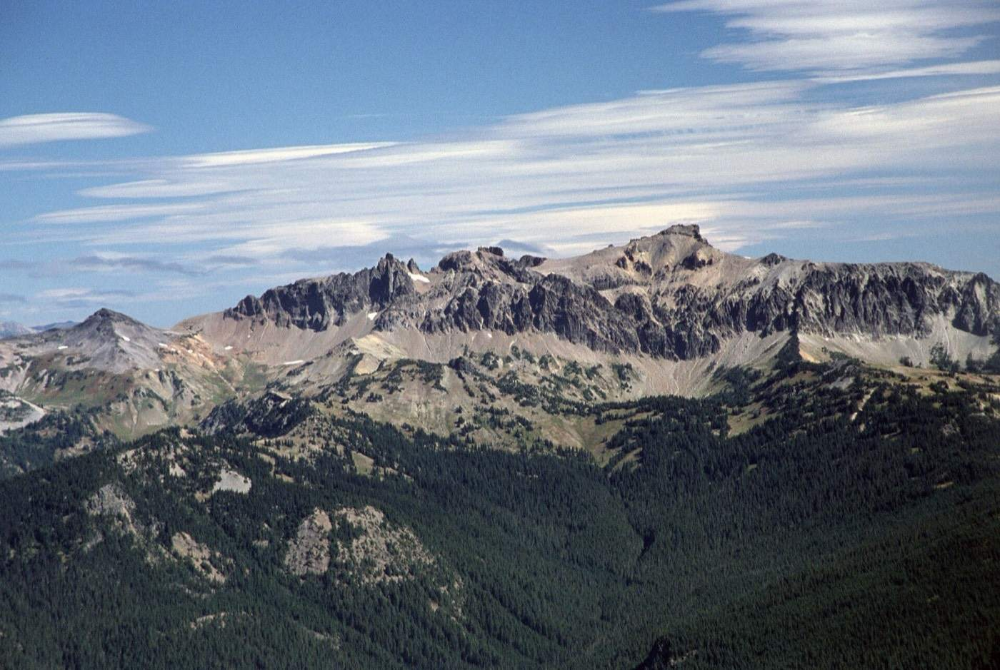
Washington · the Goat Rocks, home of the Knife's Edge. โกตร็อกส์Photo U.S. Forest Service, public domain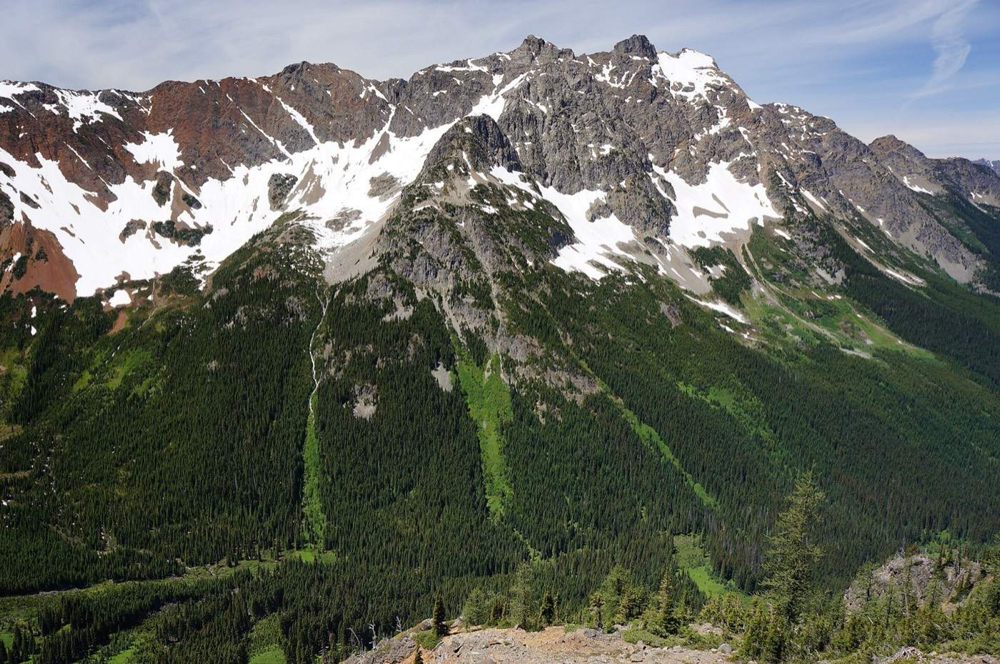
North Cascades · Mount Ballard from Grasshopper Pass. เทือกเขาแคสเคดตอนเหนือPhoto Martin Bravenboer, CC BY 2.0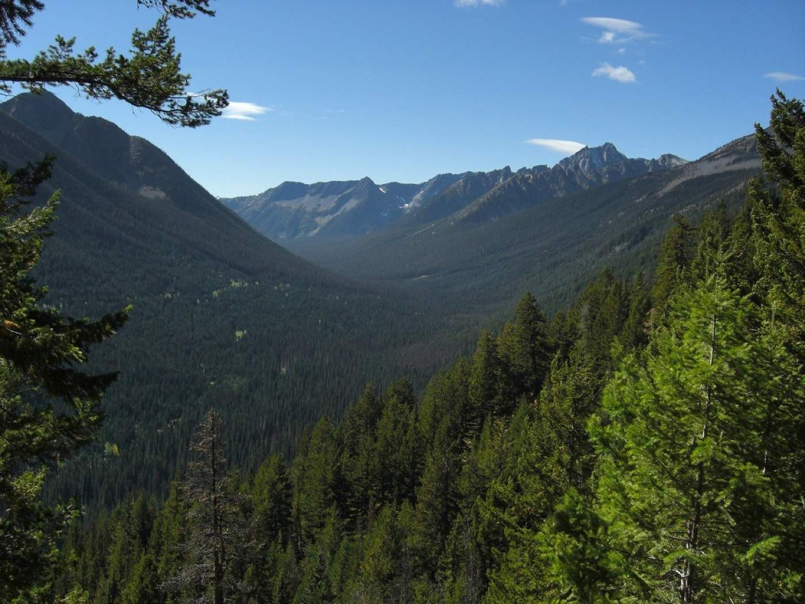
Mile ~2650 · from Manning Park, looking south to the trail's end. ปลายทางชายแดนแคนาดาPhoto Jason Hollinger, CC BY 2.0

.jpg){kind=link}


.jpg){kind=link}
Fire · snow · flood ไฟป่า · หิมะ · น้ำหลาก
Snow decides when the Sierra opens, usually mid-June. Fire decides the rest of the summer. Snowmelt makes the river fords worst in June and early July.
หิมะเป็นตัวกำหนดว่าเทือกเขาเซียร์ราจะเดินได้เมื่อไร ปกติราวกลางเดือนมิถุนายน ไฟป่ากำหนดช่วงที่เหลือของหน้าร้อน ลำธารที่ต้องเดินลุยข้ามน้ำแรงที่สุดช่วงมิถุนายนถึงต้นกรกฎาคม ตอนหิมะละลาย
Fire ไฟป่า
- Postholer trail fires: fires near the PCT this year; past years at /1/2021, /1/2022 and so on.
- PCTA closures map: official closures and detours.
- InciWeb: one page for each wildfire incident.
- NASA FIRMS: satellite hotspots, under three hours old.
- NIFC outlooks: monthly and seasonal wildfire outlooks.
- NOAA fire weather: outlooks for days 1 to 8.
Snow หิมะ
- Postholer snow: modelled snow depth along the trail, November to July.
- NOAA snow analysis: daily snow depth and water content.
- CDEC snow: California snow water by region, against average.
- NRCS SNOTEL map: snow stations in Oregon and Washington.
Flood and fords น้ำหลากและจุดลุยข้าม
- USGS Water Dashboard: live streamflow, for judging a ford.
- NWS river forecasts: flood stages and forecasts.
- Excessive rainfall outlook: flash-flood risk, days 1 to 5.
- FEMA flood maps: mapped flood zones for trail towns.
Weather พยากรณ์อากาศ
- NWS point forecast: this link opens at the southern terminus; click the map to move it.
- Postholer map: the whole trail with smoke, fire and weather layers.
Years ปีที่จำได้
1968 · National Trails System Act names the PCT one of the first two National Scenic Trails, with the Appalachian Trail.
1993 · The trail is finished, marked with a golden spike in Soledad Canyon.
2017 · Heavy snow year; California snowpack reached 180% of average. The Eagle Creek Fire closed the Columbia Gorge alternate until July 2021, and the Norse Peak Fire closed about 70 miles in Washington.
2020 · The PCTA asked hikers to stay home. 18 finishes were reported.
2021 · The Dixie Fire closed about 130 miles, from Quincy–La Porte Road (mile 1235) to the north edge of Lassen Volcanic National Park (mile 1365).
2023 · California snowpack hit 196% of average in February. Many hikers skipped the Sierra and came back for it later.
2025 · Canada ended PCT entry permits.
ปี 2021 ไฟป่าดิกซีปิดเส้นทางราว 130 ไมล์ในแคลิฟอร์เนียตอนเหนือ ปี 2023 หิมะในแคลิฟอร์เนียมากเกือบสองเท่าของปีปกติ หลายคนต้องข้ามเทือกเขาเซียร์ราไปก่อนแล้วค่อยกลับมาเดิน
For sale ประกาศขาย
Whole towns and trail businesses along the PCT that are listed, or were listed recently. Prices and status as reported on the date shown; check the source before acting.
ทั้งเมืองและกิจการริมเส้นทางที่ประกาศขายอยู่ หรือเพิ่งประกาศไม่นาน ราคาและสถานะตามวันที่ระบุ ควรเช็กแหล่งข่าวอีกครั้ง
Whole towns ขายทั้งเมือง
| Town | Trail | Asking | Status |
|---|---|---|---|
| Belden Town, Plumas County, CA About 4 acres on the Feather River: 18-room hotel, 7 cabins, 16 RV sites, restaurant, bar, general store, festival stages, and a lifetime lease on the Forest Service campground next door. Plumas Sun · Washington Post | On the trail, mile ~1285 | $4.75M | Listed Jul 2026 |
| Downtown Campo, San Diego County, CA 15.75 acres of a former WWII cavalry post: 28 buildings, about 36 units, the post office among the tenants. On and off the market since 2019. The Trek · Top Gun CRE | 1–2 miles from the southern terminus | $5.995M | Listed Aug 2026 |
Lodges, stores, hostels ที่พัก ร้านค้า โฮสเทล
| Place | Trail | Asking | Status |
|---|---|---|---|
| The Rock Inn, Lake Hughes, CA 1929 stone inn, restaurant and bar, 7 rooms, apartments. Antelope Valley News | Mile ~478, a few miles off | unconfirmed | Listed Aug 2026 |
| Old Sierra City Hotel, Sierra City, CA Rooms and a beer-and-wine bar in a resupply town. LoopNet | 1.5 mi from the Hwy 49 crossing, mile ~1195 | not shown | Unconfirmed |
| Kennedy Meadows General Store, Tulare County, CA Off-grid, solar, built 1960; the end-of-desert stop. SurvivalRealty | Mile ~702 | $675,000 | Listing expired |
| Vermilion Valley Resort, Edison Lake, CA Motel, tent cabins, store, water taxi, hiker resupply. PCTA 2013 | Mile ~878, by side trail or ferry | $975,000 | Listed 2013–2021 still open |
| Bucks Lake Lodge, Quincy, CA Bar, restaurant, 12-room motel, cabins on leased Forest Service land. | 3 mi from Bucks Summit, mile ~1263 | $291,500 | Sold after Oct 2023 |
| Callahan's Mountain Lodge, Ashland, OR 23-room lodge on 47.8 acres beside the I-5 crossing. | Mile ~1718 | not shown | Sold Sep 2020 |
| Odell Lake Resort, Crescent, OR Lodge, 14 cabins, campsites, marina, on a Forest Service permit. | Near Willamette Pass, mile ~1906 | $4.1M | Sold 2024 |
| Elk Lake Resort, near Bend, OR Lodge, cabins, general store. Bend Bulletin | Mile ~1954, about 1 mi off | $4.56M | Sold Apr 2025 |
| Hiker Heaven, Agua Dulce, CA The Saufleys' trail-angel home, 1997–2019. The Trek | Mile ~454 | not shown | Sold ~2020 |
Miles are approximate, from trail guides, and shift as the trail is rerouted.
Traditions ประเพณีบนเส้นทาง
- Trail names ชื่อบนเส้นทาง
- Other hikers give you one, usually after something you did. Many people finish the trail known only by it. เพื่อนนักเดินป่าตั้งให้ มักมาจากเรื่องที่เราทำ หลายคนเดินจบทั้งเส้นโดยไม่มีใครรู้ชื่อจริง
- Trail angels and trail magic นางฟ้าเส้นทาง
- Strangers who leave water caches in the desert, coolers of soda at road crossings, or open their homes for a shower and a bed. Casa de Luna in Green Valley was known for taco-salad dinners and a manzanita grove full of painted rocks. คนแปลกหน้าที่ฝากน้ำไว้กลางทะเลทราย วางกระติกน้ำอัดลมไว้ริมถนน หรือเปิดบ้านให้อาบน้ำนอนพัก
- Hiker box กล่องแบ่งปัน
- A box at hostels, stores and post offices. Take what you need, leave what you're tired of carrying. กล่องตามโฮสเทล ร้านค้า และไปรษณีย์ หยิบของที่ต้องใช้ ทิ้งของที่แบกจนเบื่อ
- Resupply box กล่องเสบียง
- Food mailed ahead to a post office, store or ranch along the way, marked with your name and the date you expect to walk in. ส่งอาหารล่วงหน้าไปรอที่ไปรษณีย์ ร้านค้า หรือฟาร์มระหว่างทาง เขียนชื่อและวันที่คาดว่าจะไปถึง
- Zero and nero วันพัก
- A zero is a day with zero trail miles. A nero is nearly zero: walk into town in the morning, rest the rest of the day. "ซีโร่" คือวันที่ไม่เดินเลย "นีโร่" คือเดินนิดเดียวเข้าเมืองแล้วพักทั้งวัน
- Hike your own hike เดินในแบบของเรา
- Your pace, your gear, your route choices. The saying that answers most trail arguments. ความเร็ว อุปกรณ์ และทางเลือกเป็นของเรา ประโยคนี้ยุติข้อถกเถียงได้เกือบทุกเรื่อง
- The Kennedy Meadows porch ระเบียงเคนเนดีเมโดวส์
- At mile 702 the desert ends and the Sierra begins. Hikers arriving at the general store are clapped in by the ones already on the porch. ไมล์ที่ 702 ทะเลทรายจบ เทือกเขาเซียร์ราเริ่ม คนที่นั่งอยู่บนระเบียงร้านจะปรบมือต้อนรับคนที่เพิ่งมาถึง
- Milestones in stone หลักไมล์จากก้อนหิน
- Hikers spell 500, 1000, 2000 on the ground in rocks, pinecones or sticks, and pose behind them. นักเดินป่าเรียงก้อนหิน ลูกสน หรือกิ่งไม้เป็นเลข 500, 1000, 2000 แล้วถ่ายรูปคู่กัน
- The midpoint จุดกึ่งกลาง
- A small monument in Lassen National Forest marks halfway. Its mile number changes as the trail is rerouted. อนุสรณ์เล็ก ๆ ในป่าสงวนแห่งชาติแลสเซนบอกว่ามาได้ครึ่งทางแล้ว เลขไมล์ขยับทุกครั้งที่เส้นทางเปลี่ยน
- The pancake challenge ท้ากินแพนเค้ก
- At the Seiad Valley café on the Klamath River: five pancakes, each about 13 inches across, in two hours, and they're free. ร้านกาแฟหุบเขาเซียดริมแม่น้ำคลามัท แพนเค้กห้าแผ่น แต่ละแผ่นกว้างราว 33 เซนติเมตร กินหมดในสองชั่วโมง ไม่ต้องจ่าย
- The Oregon Challenge ท้าข้ามโอเรกอน
- Walk Oregon's roughly 450 trail miles in 14 days or fewer. Oregon is the flattest state on the trail. เดินข้ามรัฐโอเรกอนราว 450 ไมล์ให้จบใน 14 วัน โอเรกอนราบที่สุดในสามรัฐ
- Bridge of the Gods สะพานแห่งเทพ
- Northbound hikers cross the Columbia River into Washington on foot, at the lowest point of the trail. Cascade Locks holds PCT Days every August. เดินข้ามแม่น้ำโคลัมเบียเข้ารัฐวอชิงตัน จุดต่ำสุดของเส้นทาง เมืองแคสเคดล็อกส์จัดงาน PCT Days ทุกเดือนสิงหาคม
- Stehekin cinnamon rolls ขนมปังอบเชยสเตฮีกิน
- The last town stop, reached by shuttle bus from the trail. The bus stops at the bakery. จุดแวะเมืองสุดท้าย ไปด้วยรถรับส่งจากเส้นทาง รถจอดแวะร้านเบเกอรี่
- The monuments อนุสรณ์สองปลาย
- A photo at the wooden monument by the Mexican border near Campo at the start, and another at the monument beside border marker 78 on the Canadian border at the finish. ถ่ายรูปที่อนุสรณ์ไม้ริมชายแดนเม็กซิโกใกล้แคมโปตอนเริ่ม และที่อนุสรณ์ข้างหลักเขตแดนหมายเลข 78 ชายแดนแคนาดาตอนจบ
Burney Mountain Guest Ranch ฟาร์มพักแรมเบอร์นีย์เมาเทน
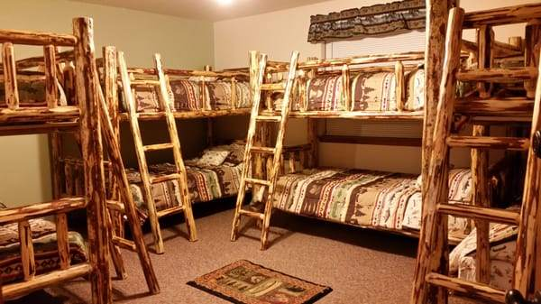
A family-run ranch in Cassel, California, 0.8 miles off the trail at mile 1411, in the dry country between Hat Creek Rim and Burney Falls. Hikers walk in for a bed, a shower and a big dinner.
- PCT bunk cabin, camping, and private cabins
- Breakfast, lunch and dinner; a small resupply store
- Showers, laundry with loaner clothes, a hiker box
- Resupply boxes by UPS or FedEx (USPS doesn't deliver there), marked with your name and the date you expect to arrive
- A saltwater pool, solar panels, and space on more than 100 acres
- Open from May
burneymountain.com · 22800 Guest Ranch Road, Cassel, CA · 206-480-9162
ฟาร์มของครอบครัวที่เมืองแคสเซิล แคลิฟอร์เนีย ห่างเส้นทางไม่ถึงหนึ่งไมล์ ที่ไมล์ 1411 มีเตียงรวมสำหรับนักเดินป่า ที่กางเต็นท์ ห้องอาบน้ำ ซักผ้า อาหารสามมื้อ และรับกล่องเสบียงทาง UPS หรือ FedEx
Sources แหล่งข้อมูล
- Wikipedia: Pacific Crest Trail
- PCTA FAQ · PCTA permit and completion numbers · PCTA fact sheet
- U.S. Forest Service: about the PCT
- Postholer · NIFC · National Weather Service · NOAA · USGS
- PCTA: Dixie Fire closure · PCTA: Eagle Creek reopens · Backpacker: 2023 snow
- Trailside Reader: the pancake challenge
- Burney Mountain Guest Ranch · LongTrailsWiki
- Photos from Wikimedia Commons, credited under each; Burney Mountain photo from the ranch.